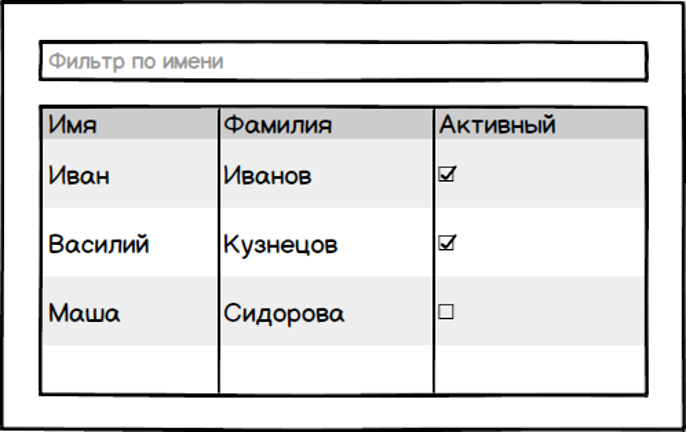
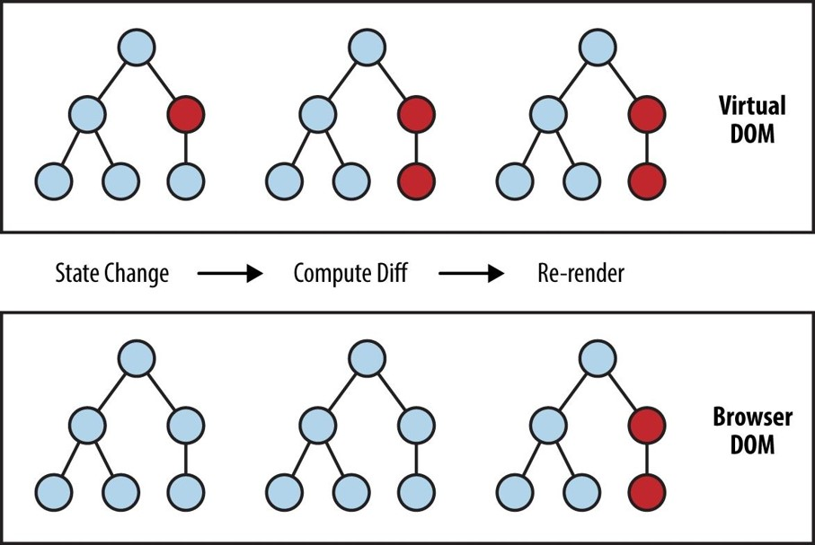

One-way data flow

Михаил Кузнецов
Михаил Кузнецов

import React from 'react';
import ReactDOM from 'react-dom';
ReactDOM.render(
<h1>Hello, world!</h1>,
document.getElementById('root')
);
class HelloMessage extends React.Component {
render() {
return (
<div>
Hello {this.props.name}
</div>
);
}
}
ReactDOM.render(<HelloMessage name="Taylor"/>, mountNode)
npm install -g create-react-app
create-react-app my-app
cd my-app
npm start
или
npx create-react-app my-app
cd my-app
npm start
npm run eject
import React, { Component } from 'react';
import Logo from './Logo';
import Menu from './Menu';
export default class Header extends Component {
render() {
return (
<div className="header">
<Logo className="header__logo"/>
<Menu className="header__menu"/>
</div>
);
}
}
<Menu className="header__menu"/> - строчные атрибуты
<User logged={true} /> - булевы атрибуты
<User logged={isLogged()} /> - произвольные атрибуты
/* <User /> */ - комментарии
<div style={{color:'red'}} /> - стили (объекты)
return flag && <div />; - это JS-объекты!
<User username="ydvorzhetskiy"/>
export default class User extends Component {
render() {
return (
<div>
My name is {this.props.username}
</div>
);
}
}
<Page>
<div/>
<span/>
</Page>
export default class Page extends Component {
render() {
return (
<div className="page">
{this.props.children}
</div>
);
}
}
class Hello extends Component {
render() {
const {username} = this.props;
return (
<div>Hello, {username}</div>
)
}
}
// Эквивалентная запись
const Hello = ({username}) => (
<div>Hello, {username}</div>
);

let user = {
username: 'Ivan',
email: 'ivan@example.com'
};
class App extends Component {
render() {
return (
<div className="App">
Header user={user}>
...
</div>
);
}
}
class Header extends Component {
render() {
return (
<div className="header">
<div>{this.props.user.name}</div>
</div>
);
}
}
См в личном кабинете
Спасибо!
Не бойтесь React!